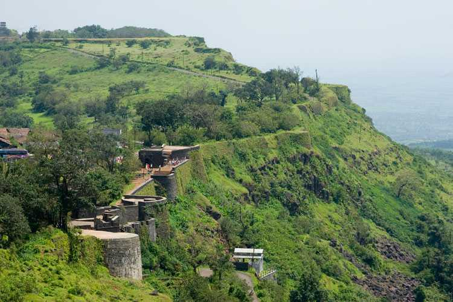
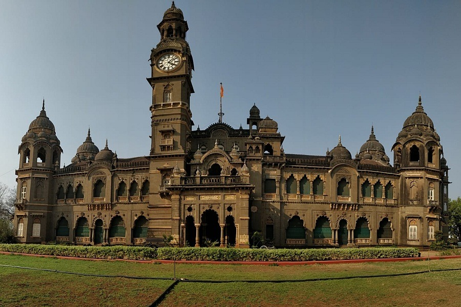
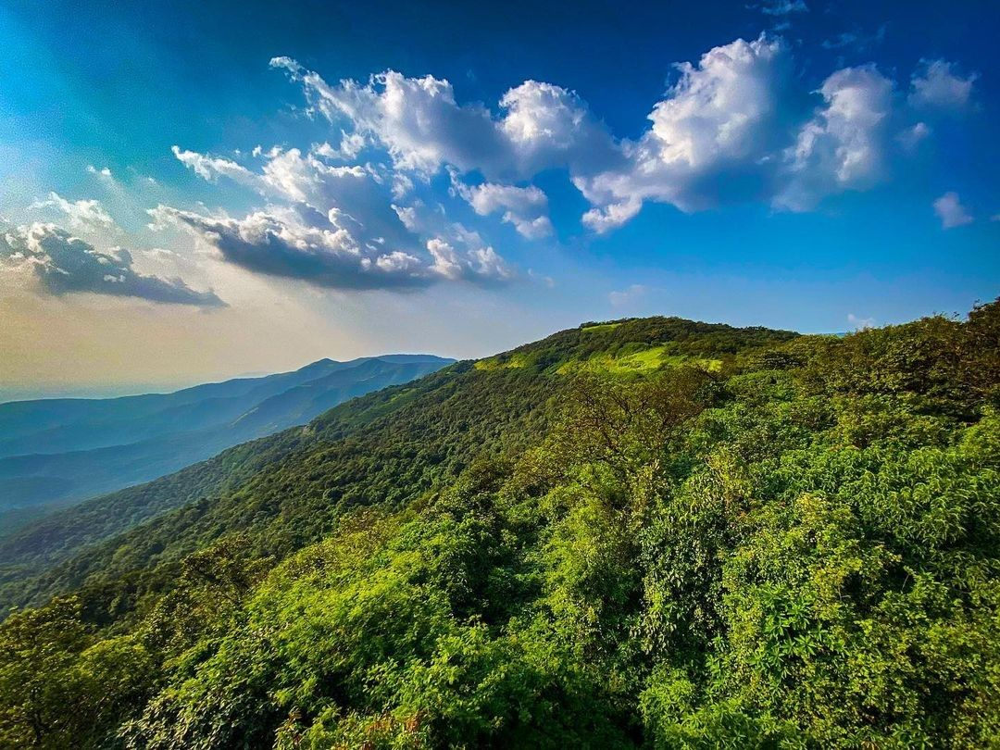
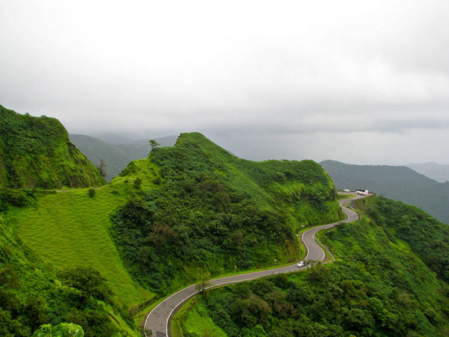
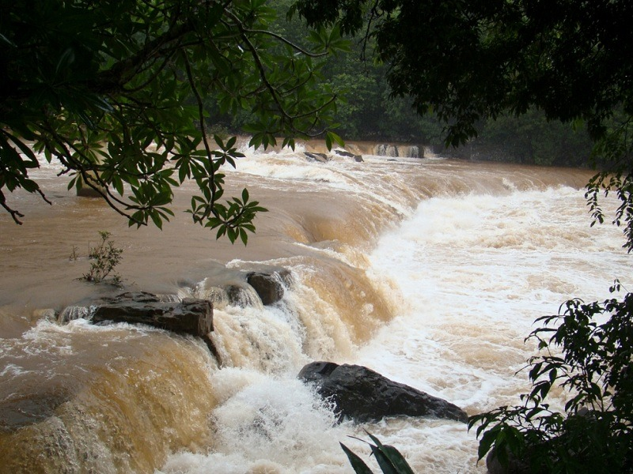
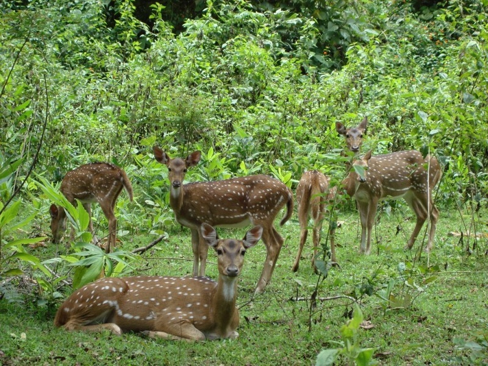

Panhala Fort
Panhala Fort, Kolhapur Overview
The Panhala Fort lies 20 km away from the main city of Kolhapur, situated at its north-west. This fort holds its position amongst the most massive location in the country and is the largest one in the Deccan region. It was built in a strategic position where a major trade route ran within Maharashtra from Bijapur to the coasts of Arabian Sea. This place is not only a must-visit for the people who love exploring historic locations but also for those who love to trek.
Looking over the green slopes of Sahyadri, it has around 7 kilometres of fortifications along with full proof protection guaranteed by three double-walled gates which are humongous in size. The entire stretch of Panhala Fort is dotted with parapets, ramparts, and bastions and styled with motifs of different dynasties that ruled over the fort - the Marathas, Bahamas, Mughals and so on. The old Panhala Fort was founded in the late 12th century by Raja Bhoja. It was constructed during the period 1178-1209 AD to be later modified by the Marathas. The Indo-Islamic style fort is famously known for being residences to the great Maratha ruler Shivaji and the Queen Regent of Kolhapur - Tarabai.

Shri Chh Shahu Museum
The New Palace located on the Bahvani Mandap-Kasaba Bavda Road was constructed in 1877-84 and has been the residence of Chatrapati Shahu Maharaj. The ground floor of the palace is converted into a museum that houses artifacts belonging to those times when the king ruled and his own possessions.
The beautiful palace is built in black polished stone and is an marvelous architectural feat to have been accomplished in that period. You can witness the royal lifestyle through the pictures and artifacts displayed in the museum.

Dajipur Wildlife Sanctuary
The former hunting grounds of the Maharaja of Kolhapur, Dajipur Wildlife Sanctuary was declared as a wildlife sanctuary in 1985. Also known as Bison Sanctuary, the place is popular for Indian Bison or Gaurs. Besides, one can also spot leopards, tigers, sloth bears etc. Set amidst verdant forests, the sanctuary makes for a perfect getaway from the city.

Gaganbawada
Located at a distance of 55 kms from Kolhapur, Gaganbawada is a town on the Western Ghats or the Sahyadris. The hilly town is undeveloped and is mostly famous for Gagangad Fort, Karul Ghat and Bhuibavda Ghat situated in the area. The town also has several temples, Lakshmapur Dam and Pandav caves; and is shot in many Bollywood movies.

Ramtitrth Waterfall
Gushing down on the banks of River Hiranyakeshi in Ajara Taluka in Kolhapur, Ramtirth Waterfall is a natural waterfall popular for its unmatched serenity and beautiful locales. The spot is mostly used for day picnics and to unmind from the hustle-bustle of the city. The area also has several temples which are thronged by pilgrims at all times.

Sagareshwar Deer Sanctuary
Sagareshwar Wildlife Sanctuary is a unique protected area in Kolhapur district which is a man-made forest. Sprawling over an area of around 11 square kms, the wildlife is also artificially introduced in the arena. The sanctuary boasts of a rich flora and fauna and is a popular tourism centre in Maharashtra.

Kopeshwar Temple
Located in Khidrapur in Kolhapur district at the junction of Maharashtra and Karnataka, Kopeshwar Temple is dedicated to Lord Shiva. Built on the banks of River Krishna, the shrine boasts of a beautiful architecture with various intricate carvings on the interior and exterior walls. Besides, it also has idols of Lord Shiva, Vishnu, Brahma among others.


Rankala Lake
The Rankala Lake is a very famous tourist attraction for people from all over the world. Marked by the natural beauty and peaceful environment it provides, it sure does become one of the must-visits on everyone's list. The lake was constructed by Shri Chhatrapati Shahu Maharaj, the then king of Kolhapur. Rajgath and Marathghat are the two ghats that the lake has. The lake covers an area of as large as 107 hectares. The lake is generally visited during the evening time.
The Rankala Lake is a place of serene beauty further mystified with various legends. This Lake has a circumference of 4.5 miles. On its west lies the regal Shalini palace and on its east is the Padma Raje gardens. The Rankala lake has a fascinating history dating back to the days of Shri Chhatrapati Sahu Maharaj who was the ruler of Kohlapur. Many believe that the Rankala Lake is not a real natural lake at all and that is was built by Shri Chhatrapati Sahu Maharaj.